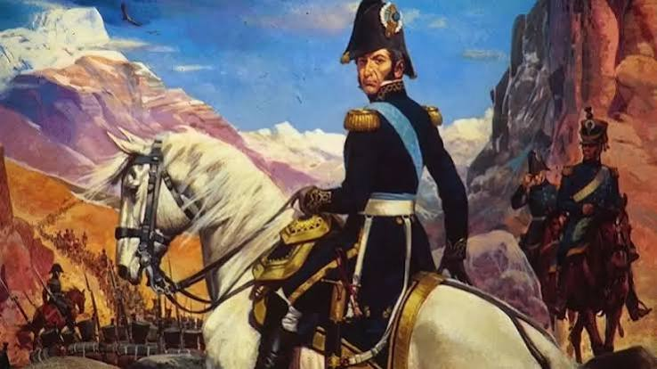

Palabras sobre el paso a la inmortalidad del general San Martin
Por: Jazmin Antunez y Maia Lopez Arrozpide

Participó todo el nivel secundario.
Autoridades, docentes y alumnos, hoy nos reunimos como cada año para recordar a quien la historia llama el Padre de la Patria: el general José de San Martín. No lo hacemos por costumbre, sino porque su vida sigue teniendo algo para decirnos.
San Martín nació en Yapeyú, actual provincia de Corrientes, en 1778. Siendo apenas un niño viajó con su familia a España, y allí, desde 1789, se formó como militar: combatió en África y en las guerras contra Francia, Inglaterra y Portugal, participando en más de treinta acciones bélicas. Tenía por delante una carrera asegurada en el ejército español. Sin embargo, en 1811 tomó una decisión que cambiaría su historia y la de un continente: renunció a ese futuro y partió hacia Londres, con la mirada puesta en América.
El 9 de marzo de 1812 desembarcó en Buenos Aires. No venía a servir a un rey, sino a ayudar a construir la libertad de los pueblos americanos. El Triunvirato le confió la organización de un escuadrón de caballería que, bajo su mando, se transformó en el Regimiento de Granaderos a Caballo, el cuerpo que formaría a tantos de los hombres que lo acompañarían en sus campañas.
Convencido de que la independencia de Buenos Aires solo sería segura si se liberaba también a Chile y a Perú, planificó una de las hazañas militares más audaces de la historia: el cruce de los Andes. En 1817, al frente de un ejército que él mismo organizó, equipó y entrenó, atravesó la cordillera para asegurar la libertad de Chile. Tres años más tarde partió hacia el Perú, donde entró triunfante en Lima y proclamó su independencia el 28 de julio de 1821. Con el Cruce de los Andes selló la independencia de América y nos legó una enseñanza eterna: la libertad es un deber que se honra con coraje, determinación y amor por la Patria.
Los últimos años de su vida los pasó en Europa, dedicado a la educación de su hija Mercedes. Murió lejos de su patria, en Boulogne-sur-Mer, Francia, un 17 de agosto de 1850, acompañado por ella. Recién en 1880 sus restos fueron trasladados a Buenos Aires, donde hoy descansan en la Catedral, custodiados por una guardia del regimiento que él mismo creó.
Estas máximas reflejan el pensamiento del General, sus principios y valores esenciales que deseaba inculcar en su hija. Estos principios conforman una guía integral para la formación ética y humana centrada en la sensibilidad, la verdad, el respeto y la solidaridad. Él deseaba que fuera educada en el amor al prójimo, especialmente los más débiles, el compromiso con la justicia, la sencillez y la discreción, el equilibrio emocional y el respeto por la diversidad religiosa y social. Pero, sobre todo, un profundo amor a la patria y la libertad. Debemos trabajar para tener una “patria grande” como lo deseaba el General: una sociedad fuerte, próspera pero sustentada en valores. Para eso es fundamental inculcar a la juventud el respeto, el mérito, la responsabilidad, el trabajo honesto, la valoración de la cultura y el compromiso con el bien común.
Hoy, al recordar al General José de San Martín, no solo homenajeamos al gran Libertador, sino también a la persona que comprendió que una patria se construye con libertad, responsabilidad, respeto y solidaridad.
Su ejemplo nos invita, especialmente a los jóvenes, a preguntarnos qué podemos hacer cada día para construir una sociedad mejor. Porque mantener viva su memoria no significa solamente recordar su historia, sino hacer realidad, con nuestras acciones, los valores por los que luchó. Que su legado nos inspire a trabajar juntos por una patria más justa, libre y solidaria. Muchas gracias.